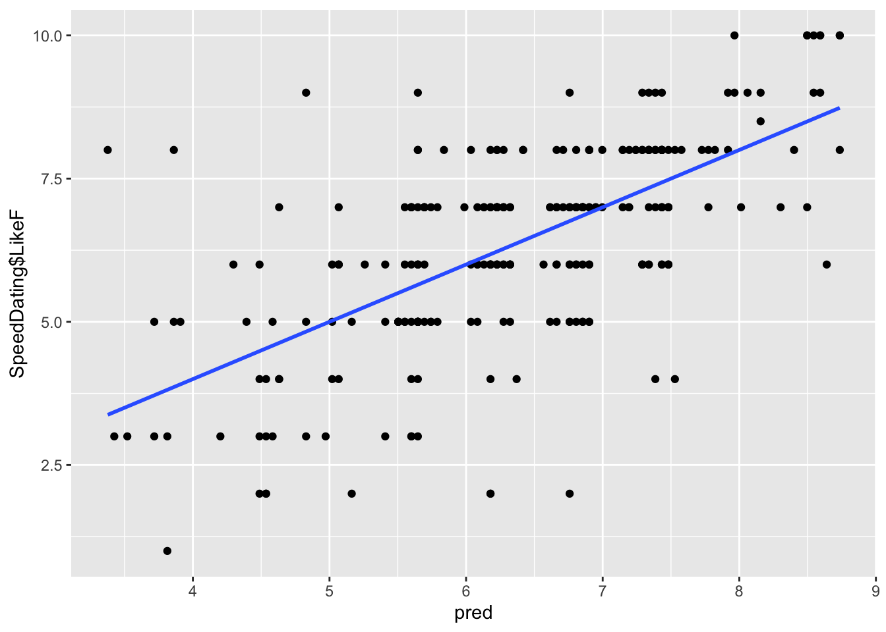
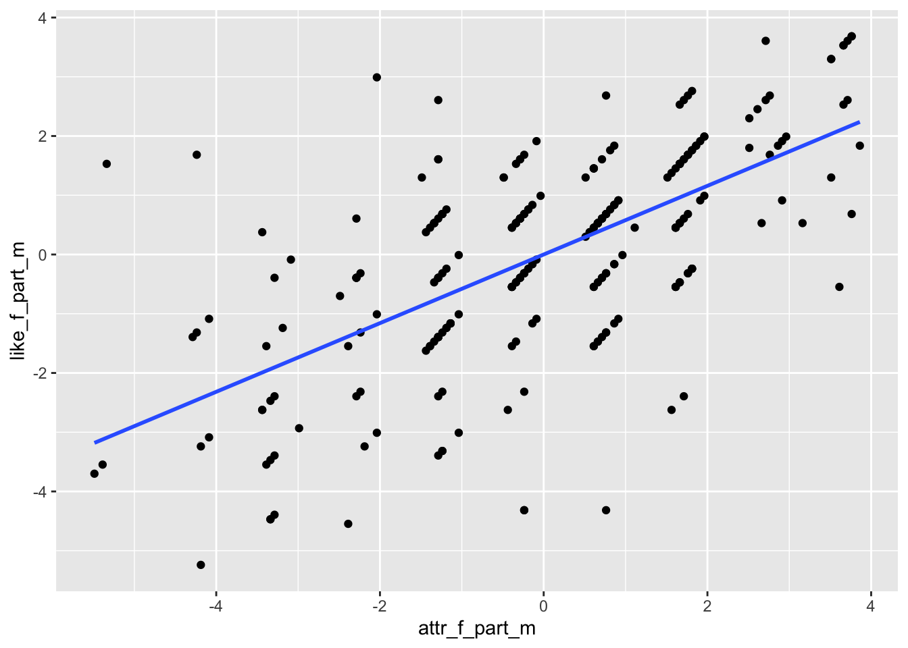
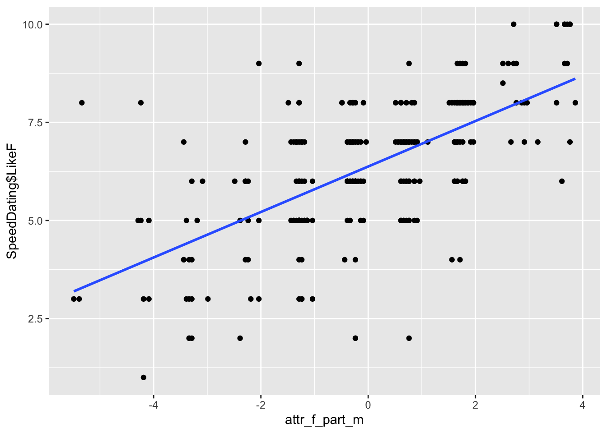

In this lesson we will cover Multiple Linear Regression (MLR), which is often just called “regression” since it is the most basic and common form of linear regression people use. It follows the same ideas as simple linear regression from the previous lesson, except now we are including more predictors.
The Dataset
The dataset is SpeedDating.csv. This dataset comes from a study on speed dating, where individuals went on a 5 minute “date” with another individual and were asked questions involving their date afterwards.
AttractiveF — how much the female partner as being attractive (1–10 scale)
PartnerYesM — how much the male partner perceives the female likes him (1–10 scale)
LikeF — how much the female likes their partner (1–10 scale)
DecisionM — whether or not the male would go on a second date with the female (0 = no, 1 = yes)
Our focal model will be predicting how much a female in a speed dating event likes their partner (LikeF) from two variables: how much the male partner perceives the female likes him (PartnerYesM) and how much the female perceives her partner as being attractive (AttractiveF).
1. Fitting Multiple Linear Regression
Multiple Linear Regression
MLR follows the same ideas as simple linear regression, except now we are including more predictors. These multiple predictors make the \(R^2\) effect size more of interest. Recall that the \(R^2\) of a model with only one predictor is equivalent to the t test for that one predictor. However, now since we have more than one predictor, the \(R^2\) conveys more information.
Using lm() for MLR
To do MLR with the lm() function, just add more than one variable from the dataset.
model1 <-lm(LikeF ~ PartnerYesM + AttractiveF, data = SpeedDating)summary(model1)
Call:
lm(formula = LikeF ~ PartnerYesM + AttractiveF, data = SpeedDating)
Residuals:
Min 1Q Median 3Q Max
-4.7581 -0.7003 0.1463 0.8270 4.6233
Coefficients:
Estimate Std. Error t value Pr(>|t|)
(Intercept) 2.46280 0.34545 7.129 9.58e-12 ***
PartnerYesM 0.04777 0.03750 1.274 0.204
AttractiveF 0.57950 0.04290 13.507 < 2e-16 ***
---
Signif. codes: 0 '***' 0.001 '**' 0.01 '*' 0.05 '.' 0.1 ' ' 1
Residual standard error: 1.351 on 265 degrees of freedom
Multiple R-squared: 0.4132, Adjusted R-squared: 0.4088
F-statistic: 93.32 on 2 and 265 DF, p-value: < 2.2e-16
The output is the same as a simple regression, but now there are two slopes for PartnerYesM and AttractiveF.
However, lm() does not include the model correlation coefficient (R), so you have to manually find this by taking the square root of the \(R^2\).
sqrt(summary(model1)$r.squared)
[1] 0.6428349
Alternatively, since the model correlation coefficient is just the correlation of the observed outcome with the predicted scores, you can find it with cor().
pred <-predict(model1)cor(SpeedDating$LikeF, pred)
[1] 0.6428349
Interpretations of Coefficients
Recall that interpretations need to discuss differences between two points, need to talk about expected/predicted outcome values, and need to mention directionality (see the Simple Linear Regression lesson). This is an important aspect to intepretting coefficients as the vast majority of people are technically doing it wrong, and AI won’t help you here. So I would go back to review this. The only new thing added for multiple linear regresison is that when interpreting any given coefficient, you are “controlling” for other predictors, which needs to be mentioned. To “control” for a predictor is to hold it constant while you are examining differences on a different variable.
Interpretations on the model above are as follows
Intercept:
For a couple where the male partner rating that the female wants another date was 0 scale points and the female partner rating of the male’s attractiveness was 0 scale points, the female is expected to rate her liking of the male as 2.64 scale points. Note that 0 values for either predictor are not possible scores since the scale is from 1-10.
Slope of PartnerYesM:
Among two couples who differ by one point on the male’s rating that the female wants another date and where the female partners rated the male partners attractiveness as the same, the female is expected to like the male .04 scale points more in the couple with the higher male rating of the female wanting another date.
Slope of AttractiveF:
Among two couples who differ by one point on the female’s rating of male partner attractiveness and where the male partner’s rating that the female wants another date is the same, the female is expected to like the male .55 scale points more in the couple with a higher female perceived attractiveness.
Interpretation of Model Correlation Coefficient
Recall this was .64.
The predicted female ratings of how much they liked their male partner and the observed female ratings of how much they liked their partner are correlated at about .62.
Intuitively, this is similar to a regular correlation between Y and X, but since you have multiple X’s, it’s the correlation between Y and [X1, X2]. It just so happens that you can represent the combination of X1 and X2 through the regression model (e.g., \(b_0 + b_1X_1 +b_2X_2\)), which is equivalent to the predicted scores. This is why this “model” correlation coefficient is interpreted this way. It’s literally the correlation between Y and the model (via the predicted scores).
Interpretation of \(R^2\) Effect Sizes
The \(R^2\) coefficient is often interpreted as a percentage of the variation of the outcome explained by the predictors. To build some intuition: imagine you had to guess every female’s LikeF score with no information at all. Your best guess would just be the mean — and you would be wrong by some amount for every person. That total wrongness is \(SS_{total}\). Now imagine you get to use PartnerYesM and AttractiveF to make your guesses. You will still be wrong sometimes, but less wrong overall. \(R^2\) is simply the proportion of that original wrongness that your predictors eliminated. An \(R^2\) of .41 means your model cut the unexplained variation in LikeF by 41% compared to just guessing the mean.
In our example, \(R^2\) = .4132. So PartnerYesM and AttractiveF explain about 41% of the variation of LikeF. If you want to, you can look at Cohen’s \(R^2\) effect size benchmarks to determine that this is a strong effect.
Adjusted-\(R^2\) is interpreted a bit differently since it is an adjusted statistic that is less biased at the population level. To understand why we need it, think about what happens when you keep adding predictors to a model. Every time you add a new variable — even a completely useless one, like a person’s shoe size — the \(R^2\) will go up a little bit just by chance. The model finds small random associations in the sample data and soaks them up. This means that \(R^2\) is optimistic: it overstates how well the model would actually perform on new data from the same population.
Adjusted-\(R^2\) corrects for this by penalizing the \(R^2\) for each predictor you add. If a predictor is not adding real explanatory value beyond what chance would give you, the penalty will drag the adjusted-\(R^2\) down. So unlike regular \(R^2\), the adjusted version will not automatically increase just because you added more variables — it only goes up if the new predictor is genuinely earning its place in the model.
In our example, Adjusted-\(R^2\) = .4. So the population version of our model is expected to explain about 40% of the variation in the population data. The fact that it is only slightly lower than our \(R^2\) of .41 is a good sign — it means our two predictors are genuinely useful and we are not just capitalizing on random noise.
Bottom line is that \(R^2\) is a measure of how well our model explains what we observe in this sample. Adjusted-\(R^2\) is a more honest estimate of how well the true population model would explain all the population data.
Partial and Semi-Partial Correlations
Partial correlations remove variability from both the outcome variable and the predictor that can be explained by other predictors. It is the pure correlation between X1 and Y, filtering out the influence of X2. So it is the association of pure X1 on pure Y.
Semi-partial correlations (sr) only remove variability from the predictor which can be explained by other predictors, but does not remove variability from the outcome that is explained by the other predictors. It is the correlation between X1 and Y, but we have only filtered out the influence of X2 from X1. So it is the association of pure X1 on impure Y.
A helpful thing to keep in mind is that the term “partial” comes from “partialling out” variation of one variable from the others, as opposed to “partial” meaning only a part of a correlation. So a correlation is “semi-partial” since it is only partialling one variable of the two.
Interpreting the partial correlation of LikeF and PartnerYesM:
After having removed the variability from PartnerYesM and LikeF which can be explained by AttractiveF, the correlation between PartnerYesM and LikeF is .066.
Interpreting the semi-partial correlation of LikeF and PartnerYesM:
The correlation between LikeF and PartnerYesM is .05, after having removed variability from PartnerYesM which can be explained by AttractiveF.
Note the semi-partial correlation will ALWAYS be smaller than the partial correlation. This is since you are partialling out from both variables, there will be less variability to correlate as a result.
2. Finding Partial and Semi-Partial Correlations Manually
Finding Correlations by Saving Residuals
It is possible to manually partial out predictors from one another and find the correlations manually. If you have an automatic method, this is not preferable, but if you are using base R, this might be necessary. This method will also be necessary if you want to plot the correlations.
This is done by putting the variable you want to partial in the outcome, and whatever you are partialling out as the predictor. Save the residuals, then correlate the residuals appropriately.
Example: Find the partial and semi-partial correlations of AttractiveF and LikeF, partialling out PartnerYesM.
# Partial out PartnerYesM from AttractiveF and save residualsattr_f_part_m <-resid(lm(AttractiveF ~ PartnerYesM, data = SpeedDating))# Partial out PartnerYesM from LikeF and save residualslike_f_part_m <-resid(lm(LikeF ~ PartnerYesM, data = SpeedDating))# Partial correlationcor(attr_f_part_m, like_f_part_m)
These are just if you are interested and are not required to know.
# Partial correlation of AttractiveF and LikeF, partialling out PartnerYesMy <- SpeedDating$LikeFx2 <- SpeedDating$PartnerYesMx1 <- SpeedDating$AttractiveFr_yx1 <-cor(y, x1)r_yx2 <-cor(y, x2)r_x1x2 <-cor(x1, x2)r_overlap <- r_yx2 * r_x1x2resid_ryx2 <-sqrt(1- (r_yx2^2))resid_rx1x2 <-sqrt(1- (r_x1x2^2))# Get the partial correlationpartial <- (r_yx1 - r_overlap) / (resid_ryx2 * resid_rx1x2)partial
[1] 0.6385319
# Get the semi-partial correlationsemi <- (r_yx1 - r_overlap) / (resid_rx1x2)semi
[1] 0.6355527
3. Visualizations
Visualizing Model Correlation Coefficient
To visualize correlations, you need to plot the relevant values associated with the correlations. The model R correlation is the correlation between observed and predicted scores.
gf_point(SpeedDating$LikeF ~ pred) %>%gf_lm()

You can see how the observed scores are correlated relatively strongly with the predicted scores. The steeper the slope, the stronger the correlation.
Visualizing Partial and Semi-Partial Correlations
Use the partialled out residuals from Section 2.1.
# Plot partialed out LikeF against partialed out AttractiveF (partial correlation)gf_point(like_f_part_m ~ attr_f_part_m) %>%gf_lm()

The slope here can show you a magnitude of the strength. It is kind of hard to tell though, since the correlation is strong (.63), but the scale of the plot might conceal it. You can see a linear trend upwards regardless.
# Plot regular LikeF against partialed out AttractiveF (semi-partial correlation)gf_point(SpeedDating$LikeF ~ attr_f_part_m) %>%gf_lm()

Something to keep in mind is that the plot of the semi-partial correlation will have more variation than the partial correlation. This is because it only controls (partials out) variation from one of the variables as opposed to both. Do not be confused by the scale of the Y axis though. The Y axis will be negative to positive for the partial correlation (since you partialled out LikeF), but will be only positive for the semi-partial correlation (since you are using regular LikeF, which is only positive in its scale).
4. Dichotomous Predictors
Dichotomous Predictor
Dichotomous (binary) predictors follow a different interpretation strategy than continuous predictors, but implementing them into your model is relatively straightforward.
Binary variables get introduced into the model as a “dummy coded” variable. In general, it means the variable is only represented by a 1 or a 0 as potential values. We will discuss this more in the multicategorical predictor lesson.
For the two groups in your binary variable, the group coded as 0 is considered the “baseline” or “reference” group.
The binary variable we will look at is DecisionM, which is whether or not the male decided to have another date (0 = no, 1 = yes).
Dichotomous Predictors in lm()
Adding a binary predictor to your lm() model requires one of two things:
The variable consists of only 1’s and 0’s.
The variable only has two values and is classified as a factor object.
One of these two needs to be true to include a binary predictor. If the variable consists of two different numbers that are not 0’s and 1’s (like -1 and 1 or 3 and 8), then R will think they are continuous and not dichotomous. So you can reclassify them using the factor() function.
If you are not sure what class your variable is coded as, you can use class().
class(SpeedDating$DecisionM)
[1] "integer"
Even though the above variable is just 0’s and 1’s, it is considered an “integer,” but this is ok for our lm(). You can also make this a factor by using factor().
This factor() method will become more important in future lectures. In terms of actually fitting the model, all you need to do is put your dichotomous predictor into the lm() function.
binary_model <-lm(LikeF ~ DecisionM, data = SpeedDating)summary(binary_model)
Call:
lm(formula = LikeF ~ DecisionM, data = SpeedDating)
Residuals:
Min 1Q Median 3Q Max
-5.4448 -1.2927 0.5552 1.5552 3.7073
Coefficients:
Estimate Std. Error t value Pr(>|t|)
(Intercept) 6.2927 0.1586 39.676 <2e-16 ***
DecisionM 0.1521 0.2156 0.706 0.481
---
Signif. codes: 0 '***' 0.001 '**' 0.01 '*' 0.05 '.' 0.1 ' ' 1
Residual standard error: 1.759 on 266 degrees of freedom
Multiple R-squared: 0.001868, Adjusted R-squared: -0.001884
F-statistic: 0.4979 on 1 and 266 DF, p-value: 0.4811
Dichotomous Predictor Slope Interpretations
All interpretations on dichotomous variables are determined by what the “baseline” is. The baseline (or reference group) is whatever group is coded with 0, which is the male deciding “no” in our case.
When there is a dichotomous variable, the intercept becomes the group mean for the baseline group, and the slope becomes the difference between the baseline and alternative group. Keep in mind that the difference is Group 1 - Group 0.
Intercept:
The mean rating of LikeF for a male who said no is 6.276.
Slope:
The difference between the mean rating of LikeF for a male who said no and a male who said yes is .169, where the male who said yes has a higher average.
If you want the mean of Group 1, you just add the intercept and slope.
6.276+ .169
[1] 6.445
So the mean LikeF of males who said yes is 6.445. You can fact check this by finding the individual group means.
As you can see, the means are the same as the intercept and intercept+slope (barring some rounding).
Changing the Reference Group
A limitation is that you cannot get a significance test of the Group 1 intercept from the current model. So in order to do so, you need to recode the baseline so that a male saying yes = 0 and them saying no = 1.
There are multiple ways to do this. For a numeric variable you can just use the following.
Rerunning the model with the new coding scheme will give you the proper significance for the “yes” group.
binary_model2 <-lm(LikeF ~ decision_m2, data = SpeedDating)summary(binary_model2)
Call:
lm(formula = LikeF ~ decision_m2, data = SpeedDating)
Residuals:
Min 1Q Median 3Q Max
-5.4448 -1.2927 0.5552 1.5552 3.7073
Coefficients:
Estimate Std. Error t value Pr(>|t|)
(Intercept) 6.4448 0.1461 44.119 <2e-16 ***
decision_m2 -0.1521 0.2156 -0.706 0.481
---
Signif. codes: 0 '***' 0.001 '**' 0.01 '*' 0.05 '.' 0.1 ' ' 1
Residual standard error: 1.759 on 266 degrees of freedom
Multiple R-squared: 0.001868, Adjusted R-squared: -0.001884
F-statistic: 0.4979 on 1 and 266 DF, p-value: 0.4811
As you can see, the new intercept is the group mean of the Group 1 yes group. The slope of the DecisionM variable is the same in magnitude, but now the sign has changed since we are doing Group 0 - Group 1.
Dichotomous Predictors with Covariates
All adding a covariate does is change the interpretation to controlling for the other predictors. Let us add back in PartnerYesM.
binary_model3 <-lm(LikeF ~ DecisionM + PartnerYesM, data = SpeedDating)summary(binary_model3)
Call:
lm(formula = LikeF ~ DecisionM + PartnerYesM, data = SpeedDating)
Residuals:
Min 1Q Median 3Q Max
-5.2621 -1.1511 0.4427 1.2951 3.7013
Coefficients:
Estimate Std. Error t value Pr(>|t|)
(Intercept) 5.92967 0.30066 19.722 <2e-16 ***
DecisionM 0.03722 0.22992 0.162 0.872
PartnerYesM 0.07380 0.05197 1.420 0.157
---
Signif. codes: 0 '***' 0.001 '**' 0.01 '*' 0.05 '.' 0.1 ' ' 1
Residual standard error: 1.756 on 265 degrees of freedom
Multiple R-squared: 0.009407, Adjusted R-squared: 0.001931
F-statistic: 1.258 on 2 and 265 DF, p-value: 0.2858
Interpretations for the intercept and dichotomous variable slope follow similarly to before, but now adding the fact that we are controlling for PartnerYesM. The interpretation for PartnerYesM, however, is now for two individuals of the baseline variable.
5. Tolerance and Variance Inflation Factor
Tolerance
Tolerance is the proportion of variance in a predictor that is unexplained by the other predictors in the model. In other words:
\[\text{Tolerance} = 1 - R^2_j\]
where \(R^2_j\) is the \(R^2\) you get from predicting \(X_j\) from all the other X’s in the model. We will use the full SpeedDating dataset with PartnerYesM and AttractiveF for this section.
Essentially, \(R^2_j\) tells you how well you can predict this predictor from the others. Tolerance tells you how much unique variance this predictor still has.
model_full <-lm(LikeF ~ PartnerYesM + AttractiveF, data = SpeedDating)R2_partner <-summary(lm(PartnerYesM ~ AttractiveF, data = SpeedDating))$r.squaredR2_partner
[1] 0.003276537
# Tolerance1- R2_partner
[1] 0.9967235
Tolerance is inherently unrelated to the size of correlation between predictors and outcome. It is everything else. Typically, tolerance is not a statistic of direct interest itself, but it is used as a transitionary step to get other statistics.
VIF
The Variance Inflation Factor (VIF) is the extent to which a slope coefficient’s standard error is affected by the correlation to another variable. It acts as a measure of collinearity, and is measured as:
The larger the VIF for a specific slope, the more collinear that predictor is with the other predictors of the model. The traditional cutoff for non-ignorable collinearity is when a predictor’s VIF \(\geq\) 1.10. This means that the predictor’s slope is 10% larger than it would have been if the other predictors were not in the model. Like many things in statistics, there is no necessary hard and fast rule.
Keep in mind that the higher the collinearity of the predictors, the less valid your inference is, since the inflation away from the null of 0 might be due to the correlations rather than “true” deviations from 0.
Getting VIF with vif()
There are probably multiple packages in R that can get you these statistics, but the most common is to use the vif() function from the car package. All you need to get the VIF for each coefficient is to plug your model object into the function.
vif(model_full)
PartnerYesM AttractiveF
1.003287 1.003287
If you want the tolerance, you can manually calculate it.
1/vif(model_full)
PartnerYesM AttractiveF
0.9967235 0.9967235
Well Done!
You have completed the Multiple Linear Regression tutorial. Here is a summary of what was covered:
Fitting MLR with lm() and interpreting multiple slopes controlling for other predictors
Computing the model correlation coefficient manually with sqrt() and cor()
Interpreting \(R^2\) and adjusted-\(R^2\) effect sizes
Understanding and computing partial and semi-partial correlations by saving residuals
Implementing dichotomous predictors, interpreting their slopes, changing the reference group
Computing Tolerance and VIF with vif() from the car package
The next lesson covers regression inference and multiple correlations.